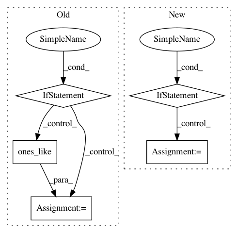

c78c065b44a97ee3afe2172d2213479622a29562,poutyne/framework/metrics/epoch_metrics/fscores.py,FBeta,forward,#FBeta#Any#Any#,138
Before Change
self._pred_sum = torch.zeros(num_classes, device=y_pred.device)
self._total_sum = torch.zeros(num_classes, device=y_pred.device)
if mask is None:
mask = torch.ones_like(y_true)
mask = mask.to(dtype=torch.bool)
y_true = y_true.float()
argmax_y_pred = y_pred.max(dim=1)[1].float()
After Change
y_true, mask = y_true
mask |= mask.bool()
if self.ignore_index is not None:
mask |= y_true != self.ignore_index
// Calculate true_positive_sum, true_negative_sum, pred_sum, true_sum
num_classes = y_pred.size(1)
if (y_true >= num_classes).any():
raise ValueError("A gold label passed to FBetaMeasure contains "
"an id >= {}, the number of classes.".format(num_classes))
In pattern: SUPERPATTERN
Frequency: 4
Non-data size: 5
Instances
Project Name: GRAAL-Research/pytoune
Commit Name: c78c065b44a97ee3afe2172d2213479622a29562
Time: 2020-08-14
Author: fredy_14@live.fr
File Name: poutyne/framework/metrics/epoch_metrics/fscores.py
Class Name: FBeta
Method Name: forward
Project Name: keras-team/keras
Commit Name: 523e24e8acf8ecc6d6b31e78cdc6e4c3967bbbdb
Time: 2016-02-07
Author: francois.chollet@gmail.com
File Name: keras/backend/theano_backend.py
Class Name:
Method Name: rnn
Project Name: etal/cnvkit
Commit Name: a8c287c0b970968feeaae325379668755760a25b
Time: 2015-05-01
Author: eric.talevich@gmail.com
File Name: cnvlib/fix.py
Class Name:
Method Name: apply_weights
Project Name: keras-team/keras
Commit Name: b688192cbd74495c9907b6dcfce47e9a582ae1af
Time: 2016-01-31
Author: francois.chollet@gmail.com
File Name: keras/backend/tensorflow_backend.py
Class Name:
Method Name: rnn